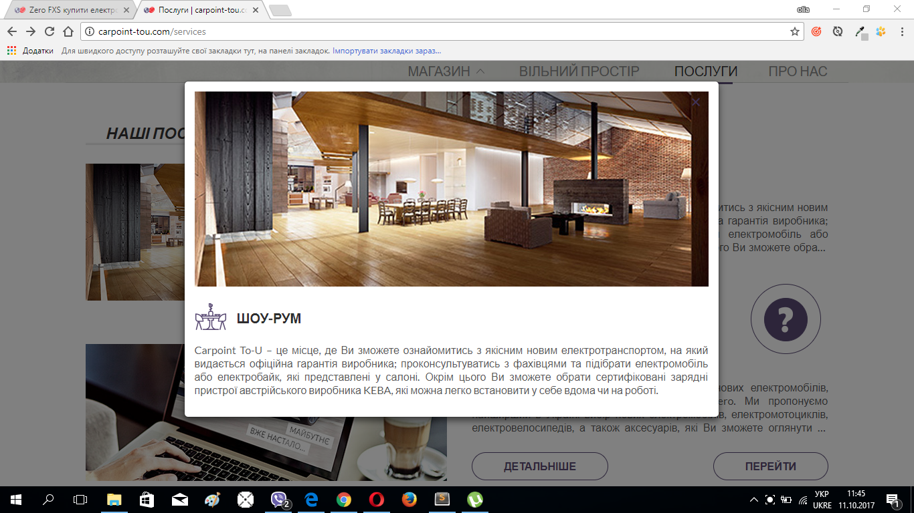
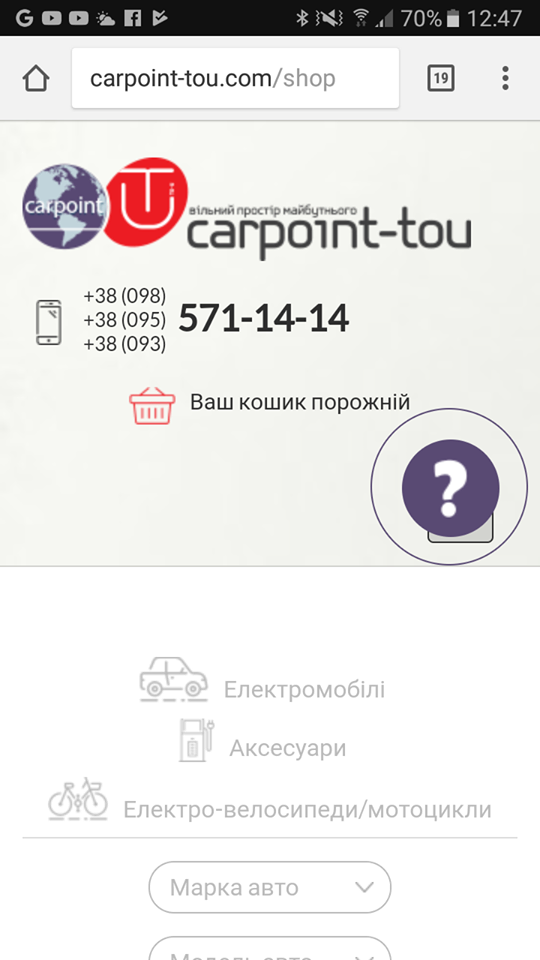

1) Некоректна робота скрипта в браузері Firefox і в мобільній версії
2) Не відображається знак питання у всіх браузерах ось тут
3) Що це за реквести ? вони сповільнюють сторінку і повне завантаження проходить майже за 17 сек. ось тут і на всіх інших подібних сторінках з товаром.
4) В "Safari " стиль сірого тексту відрізняється від стилю в інших браузерах ось тут + розтягнутий футер.
5) Я б при наведенні зробила той хрестик червоним, бо губишся і то трошки підбішує) або якось його стилізувати яскравіше.
7) Дьоргання сторінки при відкриванні віконця "Детальніше" + те саме при натисканні "купити"
8) Формочка для запитань:
- Перше , що кидається в очі - те , що не видно кнопочки submit. Появляється тільки при наведенні.( А в мобільній версії то зовсім не канає) .Це збиває з пантелику , бо заповнив формочку і тепер догадуйся , що то треба навести на біле поле і тоді появиться сабміт.
- Далі (все ще до кнопочки "відправити") дивне поводження стилів при наведенні , а потім при нажатті на неї і потім знову при наведенні.
- Що до textarea. Поставте заборону зміни розміру поля, бо то якось негодиться. Не дуже гарно. як на мене. В стилях : resize: none;
- Було б добре зобити ще цю формочку робочою))
- Навіщо інпуту для номеру тим number ? Ті переключателі ну зовсім нічого не дають. + в "safari" i "firefox" їх видно за замовчуванням , а не тільки при наведенні.
9) callbackPulse в телефоні закриває меню. А меню, в свою чергу я б зробила розгорнутим, бо користувачу буде важко здогадатися натиснути на нього , щоб побачити усі пункти , що доступні на сайті.
10) Інформацію про мобільний додаток я б закинула ще в футер сайту. типу "Наш додаток" і лінк на нього. Здається це було б виграшно.
11) Некоректна робота після такої маніпуляції:
- заходимно на сторінку "про нас" - "детальніше".
- Нас перекидує сюди :http://carpoint-tou.com/space.html + добавляється вгорі (біля кошика) опція про зміну мови (хоч вона там поки одна ).
- Тепер ця сторінка зовсім недопрацьована, але думаю ви то і так знаєте . Просто треба виправити баг щоб не перекидало на таку версію сайту.
12) На рахунок корзинки. Ви ж знаєте, що замовлення можна відправити з незаповненою формочкою і потім вам випливе на пару секунд повідомлення з подякою за покупку ?
13) Я б зробила callbackPulse все-таки не таким нав'язливим. Бо воно мозолить очі і іноді заважає клікати по сайту.
Перевірка на валідність: validator.w3.org
Головна сторінка - 22 помилки.
Помилки часто повторюються тому не буду перечислювати всі посилання. просто треба повиправляти головні. І потім перейтися ще раз.
Оптимізація сторінки - PageSpeed Tools
Тут гугл оцінив головну сторінку на 49/100. Все зводиться до того , що треба мінімізувати всі файли, картинки і т.д. Щоб ознайомитись зі всіма пропозиціями по оптимізації перейдіть по лінку і клікніть по 'как исправить' .
Деякі сторінки гугл оцінив на 0/100 і це зовсім пічально. Ось, наприклад.